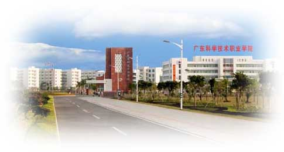

我院是广东省人民政府1985年批准设立、教育部备案的一所全日制公办普通高等学校，正厅级建制。建院之初，学院名广东省科技干部进修学院，主要承担广东省科技管理干部的继续教育培训任务，被国家科技部称誉为“地方继续教育的一颗明珠”。1989年更名为广东省科技干部学院， 1996年成为广东省首批举办普通高职教育的院校之一。2001年与珠海市政府合作共建珠海校区。2003年经教育部批准由成人高校改制为普通高等学校，并继续承担科技干部培训的任务。2008年5月，学院由广东省科技厅整建制划转广东省教育厅管理。
学院党委行政带领师生秉承“厚德、高能、求实、创新”之校训，坚持艰苦奋斗、勤俭办学，抓住机遇、加快发展，团结拼搏、争创“一流”，于2008年12月，以“优秀”成绩通过教育部高职高专人才培养工作评估，并在2010年被广东省政府授予“广东省职业技术教育工作先进集体”光荣称号。2010年学院被教育部、财政部确定为国家示范性骨干高职院校立项建设单位，2016年3月以“良好”成绩通过验收，成为国家示范性骨干高职院校。
学院现有珠海和广州两个校区，校园面积2012亩，建筑面积50多万㎡，其中教室5.45万㎡，图书馆3.05万㎡，体育场馆1.1万㎡，实习实训场所（含校内教学企业）17.8万㎡。教学仪器设备1.97万台，馆藏图书140多万册、电子图书数字资源量7806GB。
现有教职员工1327人，其中专任教师1063人。专任教师中，正高职称60人、副高职称272人，博士49人、硕士594人，双师素质教师967人，专任教师“双师”素质比例达91%。十二五期间，获全国教育系统先进集体1个，珠江学者岗位1个，省级教学名师1人，南粤优秀教师3人，“千百十工程”省级培养对象4人，省高职教育专业领军人才培养对象1人，省优秀青年教师培养对象7人，珠海市特聘学者1人。
学院全日制在校生20671人，是在校生规模最大的省属高职院校。现设有计算机工程技术学院（软件学院）、经济管理学院、外国语学院、人文社会科学学院、机械与电子工程学院、建筑工程学院、广州学院、艺术设计学院、财会与金融学院、继续教育学院、体育系等11个二级学院（系）；设有思想政治理论课教学部、大学英语教学部、体育教研部等3个教学部；建有广东省人才研究所、高职教育研究所、信息电子技术研究所、软科学研究所等4个科研机构。
现有招生专业63个，其中国家骨干校重点建设专业5个，教育部重点专业2个，省级示范专业5个，省级重点专业6个，广东省一类品牌专业1个、二类品牌专业7个。国家级精品资源共享课4门、国家精品课程5门、省级精品课程5门、省级精品资源共享课程14门。获国家级、省级教学成果奖5项。管理科学与工程、机械工程、计算机科学与技术三个学科获副教授评审权。
学院重视产学研合作、应用开发与成果转化，鼓励教师参与企业技术研发、提供技术服务，努力服务地方经济社会发展。“十二五”期间，教师发表学术论文1773篇，核心期刊及被三大检索收录317篇，出版著作26部；承担各级各类科研及技术服务项目775项；获国家授权发明专利3项、实用新型专利76项、外观设计专利107项，软件著作权66项；获地市级以上科技奖4项；18名专家入选“广东企业科技特派员”；建有2个省级人才基地、1个省级协同育人中心、1个市级重点实验室、5个校级科研团队。
学院建有校内实训基地65个，校外实训基地979个。是广东科技人才基地、广东省专业技术人员继续教育基地、广东省中职学校教师继续教育基地。
学院学生在省级以上技能竞赛中屡获佳绩，尽显广科学子风采。十二五期间，学院学生获得省级以上技能竞赛奖项529项，比十一五增长190%，其中在全国职业院校技能大赛（天津国赛）获奖12项。如2015年全国职业院校技能大赛高职组“计算机网络应用”、“云计算技术与应用”、“信息安全管理与评估”等3项国赛一等奖1项、二等奖2项，2015年全国职业院校学生技术技能创新成果交流赛一等奖，2014年“博导前程杯”电子商务运营技能竞赛一等奖，2014TEMI单晶创意暨认证技能国际竞赛团体第二名，2015年第十七届全国机器人锦标赛暨第六届国际仿人机器人奥林匹克大赛障碍跑项目和举重项目两项亚军等。
学院培养了大批优秀学生。如被媒体誉为“最牛高职生”的学院移动应用开发中心团队、国内首个获思科全额奖学金赴美实习的高职生、出境央视《奋斗》访谈栏目的创业学子、连续3年获全国职业院校技能大赛计算机网络应用项目最高奖项一等奖的计算机网络高手、参与“抗战胜利70周年”大阅兵军乐队演奏的高职生等等。
学院招生“进口”旺，现每年面向全国18个省（直辖市、自治区）招收全日制在校生8000人左右，广东省录取的新生均为第一志愿报考我院的考生。学院积极开展中高职衔接、三二分段、现代学徒制等多形式自主招生，以及本专科协同育人试点招生工作。毕业生就业“出口”畅，总体就业率均达98%以上。
学院与新加坡南洋理工学院、新西兰维特利亚理工学院及台湾朝阳科技大学、南台科技大学、台湾昆山科技大学等10多所台湾高校签订了校际合作协议。开展了“赴德国F+U实习培训”、“赴美带薪实习”、“赴台短期研修及专升本”等项目。
学院以“厚德、高能、求实、创新”为校训，秉承“质量立校、特色兴校、创新强校”的办学理念，正为创建人才培养质量社会满意度高、社会服务能力强、示范带动作用显著的全国一流、国际知名的高水平职业院校而不懈努力。
